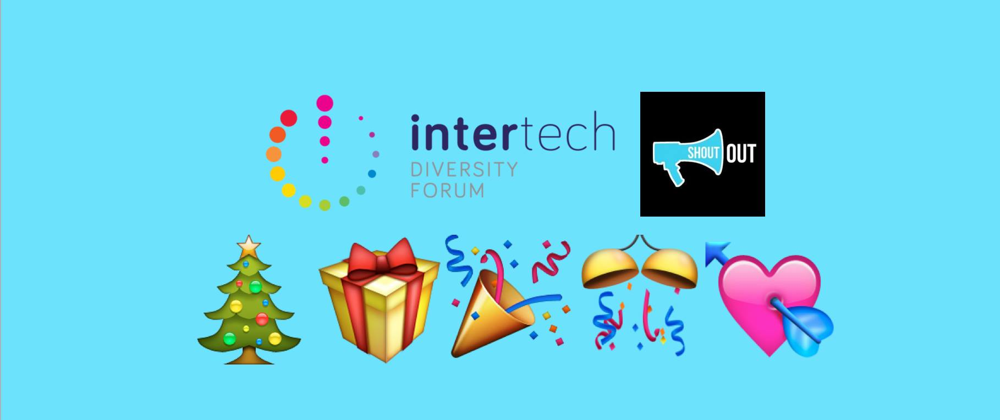
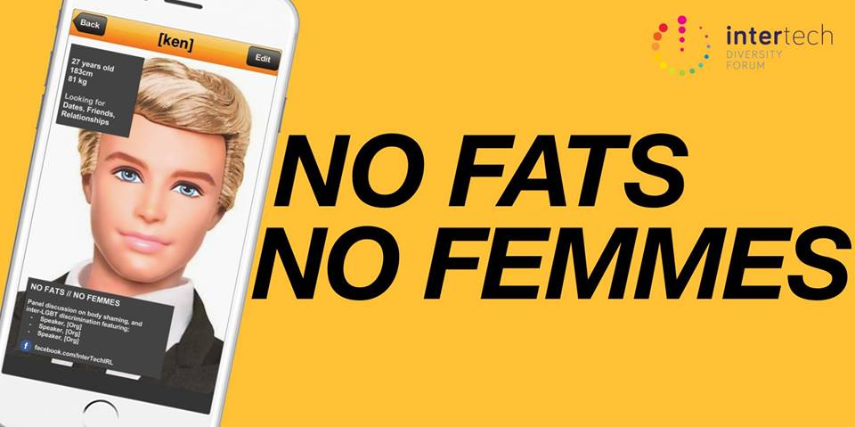
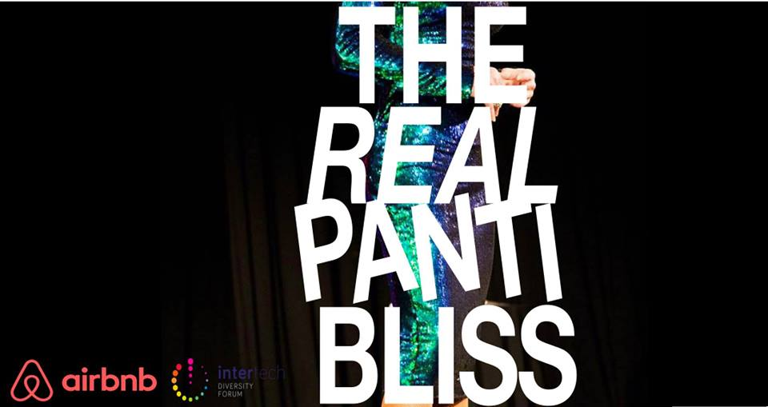
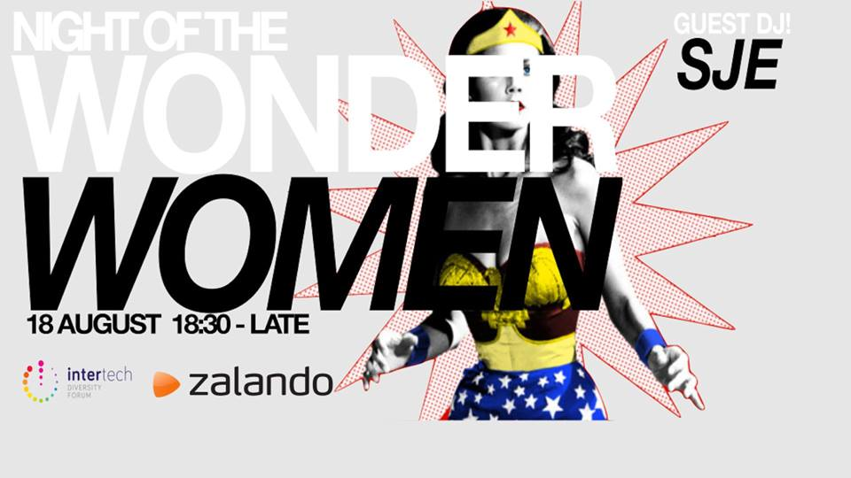
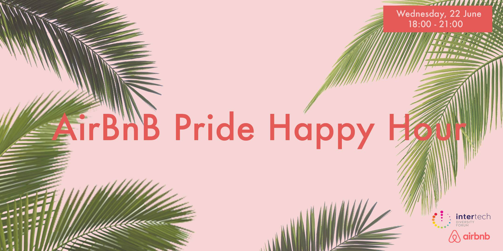
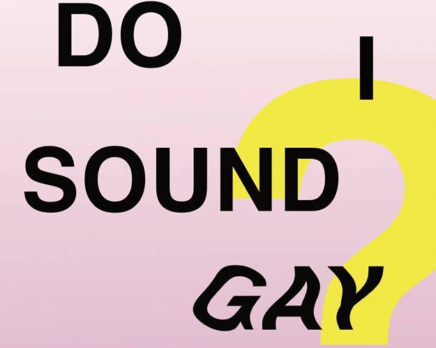
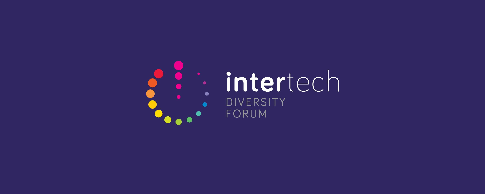

Intertech x ShoutOut fundraiser, December 2016
In line with our mission to support the LGBT community, we hosted a Christmas fundraiser for ShoutOut at Oscars Cafe Bar where we raised close to 2000 euros.
ShoutOut developed a workshop that vetted volunteers deliver on an almost weekly basis to teenagers in Irish schools – effectively training young people how to be allies. As we've all experienced, school is a damn fine place to find an ally if you're LGBTQ+.

NO FATS / NO FEMMES, November 2016
We organized "No Fats // No Femmes" at Google Ireland, a panel discussion hosted by the organization event on the topic of LGBT equality and discrimination with David Stuart, Vivienne Errington-Barnes, and Diyadh Khalaf.
"No Fats // No Femmes" is not just a common call-out to describe undesired partners who need not apply – it’s a mantra. Are these just individual sexual preferences, or do they represent racism, body shaming and homophobia that’s prevalent and unaddressed in our community?. Is marriage equality the end of the road that started with Stonewall? Are we now a nation of equals? Or are we liable to perpetuate amongst ourselves the discrimination we have suffered for decades?

The Real Panti Bliss, September 2016
Airbnb and InterTech Ireland brought the one and only Queen of Ireland Panti Bliss / Pantibar for the first time in one of our events, where we learned about the personal story behind Panti, followed by a Q&A session

The Night of the Wonder Women, August 2016
We organized our first-ever women’s event, Night of the Wonderwomen, hosted by Zalando. In the event we had a night of short interviews, networking, drinks, music by DJ Sara Jade and poetry with Janica Ribeiro!
We are delighted to count with four amazing women for this event; Kerrie Power (Director at Youpass group), Danielle De Sousa (Manager, Customer Success at Linkedin and Co-chair of InterTech Ireland) and Dena Y. Lawrence (Head of ISV Go-to-by Strategy at Microsoft) hosted by Tiffany Fitzgerald Brosnan (OutHouse).
Kiki Screening (Gaze Film Festival, July 2016)
Kiki (2016) is A dynamic coming of age story about the agency, resilience and the transformative artform of voguing, Kiki offers a riveting insight to the daily lives of LGBTQ youth-of-colour in the ‘Kiki’. We were delighted to also host drinks at the The Generator Hostel after the movie.

Pride Happy Hour at Airbnb, June 2016
The event was hosted at Airbnb new offices, and will featured a fireside chat with Charlie Bird who will talked about his book A Day In May, which compiles a collection of 50 deeply personal interviews with LGBT members, their family and friends, recorded at the time of the Marriage Equality referendum last year.

InterTech and GAZE presents: "Do I sound Gay?", March 2016
InterTech presented a fundraising screening of: "Do I sound Gay?"for GAZE Film Festival Dublin. The Screening was followed by a discussion with Guest speaker Rachel Moore (founder of Express YOUR Gender) and all proceeds went directly go to GAZE Film Festival Dublin in order to prepare the 2016 festival !

For a full list of our events check our facebook page , read our media release, our 2015 events report or contact us at info@intertech.ie .